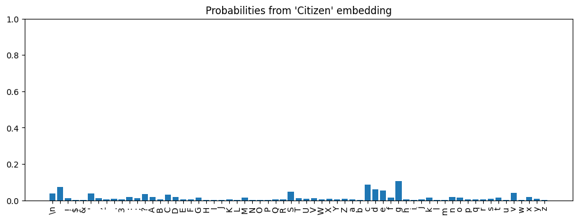

# Not exported because only used for testing within this notebook
from transformer_experiments.datasets.tinyshakespeare import (
TinyShakespeareDataSet,
)
from transformer_experiments.environments import get_environment
from transformer_experiments.trained_models.tinyshakespeare_transformer import (
create_model_and_tokenizer
)transformer-helpers.ipynb
Code that helps run and inspect parts of the transformer model.
# Create a model for testing
environment = get_environment()
print(f"environment is {environment.name}")
device = 'cuda' if torch.cuda.is_available() else 'cpu'
print(f"device is {device}")
ts = TinyShakespeareDataSet(cache_file=environment.code_root / 'nbs/artifacts/input.txt')
m, tokenizer = create_model_and_tokenizer(
saved_model_filename=environment.code_root / 'nbs/artifacts/shakespeare-20231112.pt',
dataset=ts,
device=device,
)environment is local_mac
device is cpuHelper functions for encoding/decoding strings
EncodingHelpers
EncodingHelpers (tokenizer:transformer_experiments.tokenizers.char_tokeni zer.CharacterTokenizer, device:str)
Helper class that wraps a tokenizer and provides methods for encoding and decoding strings. The tokenizer just deals with regular Python types whereas this class deals with PyTorch tensors.
# Tests for encoding helpers
encoding_helpers = EncodingHelpers(tokenizer, device)
tokenized = encoding_helpers.tokenize_string('hello')
test_eq(tokenized.shape, (1, 5))
test_eq(tokenized.cpu(), torch.tensor([[46, 43, 50, 50, 53]]))
stringified = encoding_helpers.stringify_tokens(tokenized[0])
test_eq(stringified, 'hello')
tokenized = encoding_helpers.tokenize_strings(['hello', 'world'])
test_eq(tokenized.shape, (2, 5))
test_eq(tokenized.cpu(), torch.tensor([[46, 43, 50, 50, 53], [61, 53, 56, 50, 42]]))Helpers for dealing with embeddings
unsqueeze_emb
unsqueeze_emb (emb:torch.Tensor, expected_last_dim_size:int=384)
A lot of things expect embedding tensors to have shape (B, T, X) where X is usually either n_embed or vocab_size. This function takes an embedding tensor that may be missing some of these dimensions and adds them as necessary.
# Tests for unsqueeze_emb
emb = torch.randn(5) # Wrong last dimension
with ExceptionExpected(ex=ValueError):
unsqueeze_emb(emb)
emb = torch.randn(n_embed) # missing B and T dimensions
emb = unsqueeze_emb(emb)
test_eq(emb.shape, (1, 1, n_embed))
emb = torch.randn(1, n_embed) # missing B dimension
emb = unsqueeze_emb(emb)
test_eq(emb.shape, (1, 1, n_embed))
emb = torch.randn(3, n_embed) # missing B dimension, T is 3
emb = unsqueeze_emb(emb)
test_eq(emb.shape, (1, 3, n_embed))
emb = torch.randn(2, 3, n_embed) # nothing to change
emb = unsqueeze_emb(emb)
test_eq(emb.shape, (2, 3, n_embed))
# custom expected value for last dim
emb = torch.randn(2, 3, 10) # nothing to change
emb = unsqueeze_emb(emb, expected_last_dim_size=10)
test_eq(emb.shape, (2, 3, 10))Helpers for Running Selective Parts of the Model
The functions in this section enable running pieces of the model in isolation and introspecting their intermediate results. This is useful for debugging and understanding the model.
InputOutputAccessor
InputOutputAccessor (activations:Dict[str,Tuple])
Initialize self. See help(type(self)) for accurate signature.
TransformerAccessors
TransformerAccessors (m:transformer_experiments.models.transformer.Trans formerLanguageModel, device:str)
Class that provides methods for running pieces of a TransformerLanguageModel in isolation and introspecting their intermediate results.
# Test embed tokens
encoding_helpers = EncodingHelpers(tokenizer, device)
s = 'hello'
tokenized = encoding_helpers.tokenize_string(s)
accessors = TransformerAccessors(m, device)
embedded_from_tokens = accessors.embed_tokens(tokenized)
test_eq(embedded_from_tokens.shape, (1, len(s), n_embed))# Test check_valid_input_shape
accessors = TransformerAccessors(m, device)
emb = torch.randn(5) # Wrong last dimension
with ExceptionExpected(ex=ValueError):
accessors.check_valid_input_shape(emb)
emb = torch.randn(n_embed) # missing B and T dimensions
with ExceptionExpected(ex=ValueError):
accessors.check_valid_input_shape(emb)
emb = torch.randn(1, n_embed) # missing B dimension
with ExceptionExpected(ex=ValueError):
accessors.check_valid_input_shape(emb)
emb = torch.randn(3, n_embed) # missing B dimension, T is 3
with ExceptionExpected(ex=ValueError):
accessors.check_valid_input_shape(emb)
emb = torch.randn(2, 3, n_embed) # all good
accessors.check_valid_input_shape(emb)# Test block copying
accessors = TransformerAccessors(m, device)
block_idx = 0
old_b = m.blocks[block_idx]
new_b, io_accessor = accessors.copy_block_from_model(block_idx)
test_eq(new_b is old_b, False)
encoding_helpers = EncodingHelpers(tokenizer, device)
tokens = encoding_helpers.tokenize_string('Citizen')
x = accessors.embed_tokens(tokens)
old_result = old_b(x).cpu().detach()
new_result = new_b(x).cpu().detach()
test_eq(old_result, new_result)
test_eq(io_accessor.input('.').cpu(), x.cpu())
test_eq(io_accessor.output('.').cpu(), new_result.cpu())# Test running the model
encoding_helpers = EncodingHelpers(tokenizer, device)
accessors = TransformerAccessors(m, device)
prompt = 'Citizen'
tokens = encoding_helpers.tokenize_string(prompt)
x = accessors.embed_tokens(tokens)
logits, io_accessors = accessors.run_model(x)
test_eq(len(io_accessors), n_layer)
# Run the model the normal way and make sure the logits are the same
orig_model_logits, _ = m(tokens)
test_eq(logits.cpu(), orig_model_logits.cpu().detach())# Test running model from block n
encoding_helpers = EncodingHelpers(tokenizer, device)
accessors = TransformerAccessors(m, device)
# Run through the whole model once so that we can get valid
# inputs for the intermediate blocks.
prompt = 'Citizen'
tokens = encoding_helpers.tokenize_string(prompt)
x = accessors.embed_tokens(tokens)
logits, io_accessors = accessors.run_model(x)
# Now run the model from each block in succession. Make sure the
# logits are the same and that the number of accessors returned
# is correct.
for n in range(n_layer):
x = io_accessors[n].input('.') # Grab the input to block n from the full model run
logits_from_blocks, io_accessors_from_blocks = accessors.run_model_from_block_n(x, n)
test_eq(len(io_accessors_from_blocks), n_layer - n)
test_eq(logits_from_blocks.cpu(), logits.cpu())Helpers for dealing with Logits
LogitsWrapper
LogitsWrapper (logits:torch.Tensor, tokenizer:transformer_experiments.tok enizers.char_tokenizer.CharacterTokenizer)
A wrapper class around a tensor of logits that provides convenience methods for interpreting and visualizing them.
# Tests for LogitsWrapper
# Test that creating a LogitsWrapper from a tensor that doesn't have the B and T
# dimensions results in an assertion error.
logits = torch.randn(tokenizer.vocab_size) # (vocab_size,)
with ExceptionExpected(ex=AssertionError):
LogitsWrapper(logits, tokenizer)
logits = torch.randn(2, tokenizer.vocab_size) # (2, vocab_size,) - missing B dimension
with ExceptionExpected(ex=AssertionError):
LogitsWrapper(logits, tokenizer)
# Create a logits tensor where the tokens 'h' and 'm' have
# equally high values.
logits = torch.zeros(1, 1, tokenizer.vocab_size) # (1, 1, vocab_size)
logits[0, 0, tokenizer.stoi['h']] = 100
logits[0, 0, tokenizer.stoi['m']] = 100
# Create a logits wrapper
lw = LogitsWrapper(logits, tokenizer)
# Test that probs() returns the right things
probs = lw.probs()
test_eq(probs.shape, (1, 1, tokenizer.vocab_size))
test_close(probs[0, 0, tokenizer.stoi['h']], 0.5)
test_close(probs[0, 0, tokenizer.stoi['m']], 0.5)
# Test that topk_tokens returns the right things
topk = lw.topk_tokens(k=2)[0][0]
tokens, probs = zip(*topk)
test_eq(len(tokens), 2)
test_eq('h' in tokens, True)
test_eq('m' in tokens, True)
for p in probs:
test_close(p, 0.5)# "Integration test" for logits_from_embedding() and LogitsWrapper. The values
# here will change if the model weights change but otherwise should be stable.
strings = ['Citizen', 'ANTONIO']
tokens_batch = torch.tensor(
[tokenizer.encode(s) for s in strings], dtype=torch.long, device=device
)
accessors = TransformerAccessors(m, device)
embedded = accessors.embed_tokens(tokens_batch)
logits = accessors.logits_from_embedding(embedded)
lw = LogitsWrapper(logits.cpu(), tokenizer)
expected_top_tokens = ['g', 'c', ' ', 'd', 'e']
topk = lw.topk_tokens(k=5)[0][-1]
tokens, probs = zip(*topk)
test_eq(tokens, expected_top_tokens)
expected_probs = [
0.10404,
0.08742,
0.07204,
0.06139,
0.05398,
]
for i, p in enumerate(probs):
test_close(p, expected_probs[i], eps=1e-5)# Make a plot - part of the "integration test" above
b_i = 0
lw.plot_probs(b_i=0, t_i=-1, title=f"Probabilities from {repr(strings[b_i])} embedding")